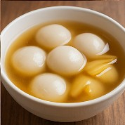

Tang Yuan (汤圆)

Ingredients
- 1 cup glutinous rice flour
- ½ cup warm water
- Optional filling: black sesame + sugar + fat
Sweet Soup
- 2 cups water
- 2 slices ginger
- Rock or brown sugar
Instructions
- Make dough, wrap filling, form balls.
- Boil until floating + 2 min.
- Serve in sweet ginger soup.
Other Recipes You Might Like